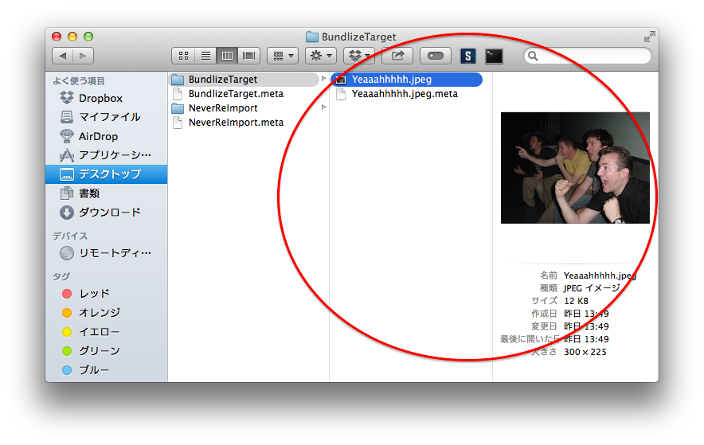

AssetBundleにしたい素材が入っているフォルダ BundlizeTargetの中身はこう。
AssetBundleにしたい素材が入っているフォルダ BundlizeTargetの中身はこう。Unityで特定のリソースのimportを避ける
概要
Unity Advent Calendar 15日目の記事です。
Unityを使う上でめっちゃ困る事象である
「platformをswitchしたときクッソ重い」
を簡単に避ける方法を見つけたので、書く。
ほんとはAssetStoreに新Assetを入れた(申請中)のを記事にしたかったんだけど、
むしろこっちの方が良い話だろうという感じ。
解決したかったこと1
Unityを使って複数プラットフォームでの開発をしていて困ること、のなかで、
「プラットフォーム切り替え時」
の時間がかかることがかなり上位に来ると思う。
既知の有償な手段：fast platform switch を使う
http://jemast.com/unity/fast-platform-switch
有償、かつ有効。
オルタナティブな手段：拡張子を変える
で、もっと簡単に、手軽にできるんじゃねーの？っていうアイデアがこちら。
「ファイルの拡張子をUnityがどうしようもないものに変える」というもの。
実際に試してみたところ、マジで実現できた。
のだけど！！！
エラーが出る条件があって、
それを避けようとやってみればみるほど、fast platform switchの手法にメッチャ似てきて、
これを公開すると
ただ単に「fast platform switch」に喧嘩を売るだけになってしまう
ということがわかった。
つまり新規性が無い。
ので、別の問題を解決することにした。
現在 2014/12/14 23:05:36
解決したかったこと2
AssetBundleを高速に作る
箇条書きにすると、
1. あるプラットフォーム向けのAssetBundleを作るとき、エディタの環境設定がそのプラットフォームになってしまい、
AssetBundleにしたいファイル以外のファイルも、プラットフォームの変更に巻き込まれて再度importされてしまう。
これはメッチャ遅いし時間掛かってストレスフルなので、再度importされないようにしたい。
2. ファイルを移動するようなコードを書きたくない。
3. 複数のプラットフォームのAssetBundleを連続で高速に作成したい。
1が特にわっかりにくいと思うので具体的に説明する。
説明
以下のような構成で、AssetBundleにしたいファイルがProject内、Resourcesフォルダ下にあったとしよう。
AssetBundleにしたい素材が入っているフォルダ BundlizeTargetの中身はこう。

対して、AssetBundleにしたくない素材が入っているフォルダNeverReImportの中身がこう。

ここで、BundlizeTargetフォルダの中身だけを、iOSとかAndroid用に、AssetBundleとして吐き出したいとする。

AssetBundleを作るときの手順のおさらい
1. リソースを用意する
2. スクリプトで以下のようなのを書く
var res1 = Resources.Load(Path.Combine(targetFolderName, "Yeaaahhhhh"));
var targetPlatform = BuildTarget.iPhone;// Unity5だとiOSになったな～
uint crc;
if (res1 != null) {
BuildPipeline.BuildAssetBundle(
res1,
null,
Path.Combine(destinationPath, "Yeaaahhhhh_bundlized"),
out crc,
BuildAssetBundleOptions.CollectDependencies | BuildAssetBundleOptions.CompleteAssets,
targetPlatform
);
}
}
3. 実行する
4. 実行後には、エディタのプラットフォーム設定は、BuildPipeline.BuildAssetBundleメソッドの内容で使われたプラットフォームになっている。
つまりどこかでプラットフォームスイッチが発生している。
実際にプラットフォームが変更されるのは、3. の内部で、まさにBuildPipeline.BuildAssetBundleメソッドが実行された瞬間になっている。
ちなみに例えばAssetBundleの吐き出し先が無いとかでエラーになっても、プラットフォームはスイッチされる。
プラットフォームスイッチが発生すると
AssetBundleにしたいBundlizedフォルダ以外にも、Assetsより下の素材的なファイルはだいたい根こそぎ、再importされる。
(ソースコードとか.unityファイルとかは再度importされない。)
で、

AssetBundleに変えたくないファイルも、再度importに巻き込まれる。
そして何より問題なことが一つ。
importは、遅い。
特にiOS、Android用のimportは、画像、サウンド、3Dモデルなどすべてにおいてクッソ遅いし重い。
余計なファイルをimportすることは辛い。
ということは、余計なファイルをimportしないようにすれば、高速化できるのでは？
っつーことでやってみた。
解決策
AssetBundleを作る瞬間に、
AssetBundleにしたくないファイル全部の拡張子を、
Unityが気にしない物に変更する。
プロジェクトはこちら。
https://github.com/sassembla/PlatformSwitcher
名前は気にしないでください。
プロジェクトを適当にDLしてきて、
メニュー > Window > Bundlize で、Bundlizeフォルダの中身を高速にAssetBundle化する。
iOS用、Android用の順に、計2つのAssetBundleを、PlatformSwitcher/Bundlized フォルダ内に吐き出す。

その際、AssetBundle化が完了するまでの間、NeverReImportフォルダの中身は再度importされない。
つまり無駄なimportが無く高速。
手法解説
1. プラットフォームスイッチでimportされる可能性のあるファイルの拡張子をすべて + .deactivate 付きに変える(deactivate化)
2. 開始前のプラットフォームを記録しておく
3. AssetBundle化したいやつだけdeactivateを解く(activate化)
4. AssetBundleを好きなだけ作る
5. 3で保存しておいたプラットフォームに戻す(今回はダミーAssetBundleを作ることで無理矢理戻している)
6. 1で変えたファイルの拡張子を全部戻す
ね、簡単でしょう？
状況解説
実行部分だけだとこんな感じ。
using UnityEngine;
using UnityEditor;
using System;
using System.IO;
using System.Collections.Generic;
class AssetBundleContainer {
[MenuItem ("Window/Bundlize", false, 1)]
static void AssetBundlize () {
// Bundle化したあとのモノの置き場を適当に作る
var destinationPath = "Bundlized";
FileController.Renew(destinationPath);
/*
deactivate
対象が含まれる、すべての「importされると面倒なファイル」を、importされなそうな拡張子にリネームする。
*/
var deactivateTargetPath = Path.Combine(Application.dataPath, "Resources");
var transactionId = Deactivator.DeactivateFilesUnderPath(deactivateTargetPath);
var targetFolderName = "BundlizeTarget";
var targetFolderPath = Path.Combine(deactivateTargetPath, targetFolderName);
// 現在のプラットフォームを記録
var beforePlatform = EditorUserBuildSettings.activeBuildTarget;
// AssetBundleにする対象のファイルの拡張子だけを戻す(この場合フォルダ単位で戻している)
Deactivator.ActivateFilesUnderPath(transactionId, targetFolderPath);
// iOS用にAssetBundleを作成
if (true) {
var res = Resources.Load(Path.Combine(targetFolderName, "Yeaaahhhhh"));
var targetPlatform = BuildTarget.iPhone;// Unity5だとiOSになったな～
uint crc;
if (res != null) {
BuildPipeline.BuildAssetBundle(
res,
null,
Path.Combine(destinationPath, "Yeaaahhhhh_bundlized_ios"),
out crc,
BuildAssetBundleOptions.CollectDependencies | BuildAssetBundleOptions.CompleteAssets,
targetPlatform
);
}
}
var afterPlatform1 = EditorUserBuildSettings.activeBuildTarget;
Debug.Log("after1:" + afterPlatform1);
// Android用にAssetBundleを作成
if (true) {
var res = Resources.Load(Path.Combine(targetFolderName, "Yeaaahhhhh"));
var targetPlatform = BuildTarget.Android;// Unity5だとiOSになったな～
uint crc;
if (res != null) {
BuildPipeline.BuildAssetBundle(
res,
null,
Path.Combine(destinationPath, "Yeaaahhhhh_bundlized_android"),
out crc,
BuildAssetBundleOptions.CollectDependencies | BuildAssetBundleOptions.CompleteAssets,
targetPlatform
);
}
}
var afterPlatform2 = EditorUserBuildSettings.activeBuildTarget;
Debug.Log("after2:" + afterPlatform2);
// リセット
if (true) {
uint crc;
var resetterRes = Resources.Load("dummyText");
if (resetterRes != null) {
BuildPipeline.BuildAssetBundle(
resetterRes,
null,
Path.Combine(destinationPath, "resetter"),
out crc,
BuildAssetBundleOptions.CollectDependencies | BuildAssetBundleOptions.CompleteAssets,
beforePlatform
);
}
}
var afterPlatform3 = EditorUserBuildSettings.activeBuildTarget;
Debug.Log("after3:" + afterPlatform3);
// 無効化していたのを元に戻す
Deactivator.RollbackTransaction(transactionId);
}
}
class Importer : UnityEditor.AssetPostprocessor {
public void OnPreprocessTexture () {
Debug.LogError("assetPath:" + assetPath);
}
}
プラットフォームスイッチが発生すると、再importが発生する。
再importが発生すると、OnPreprocessTextureメソッドが呼ばれ、
Debug.LogErrorが走ってあぶなーーーいっ！ って言ってくれるようになっている。
で、先ほどのフォルダ構成に対して、

1. プラットフォームスイッチでimportされる可能性のあるファイルの拡張子をすべて + .deactivate 付きに変える(deactivate化)
/*
deactivate
対象が含まれる、すべての「importされると面倒なファイル」を、importされなそうな拡張子にリネームする。
*/
var deactivateTargetPath = Path.Combine(Application.dataPath, "Resources");
var transactionId = Deactivator.DeactivateFilesUnderPath(deactivateTargetPath);
2. 開始前のプラットフォームを記録しておく
// 現在のプラットフォームを記録
var beforePlatform = EditorUserBuildSettings.activeBuildTarget;
3. AssetBundle化したいやつだけdeactivateを解く(activate化)
// AssetBundleにする対象のファイルの拡張子だけを戻す(この場合フォルダ単位で戻している)
Deactivator.ActivateFilesUnderPath(transactionId, targetFolderPath);
4. AssetBundleを好きなだけ作る
// iOS用にAssetBundleを作成
if (true) {
var res = Resources.Load(Path.Combine(targetFolderName, "Yeaaahhhhh"));
var targetPlatform = BuildTarget.iPhone;// Unity5だとiOSになったな～
uint crc;
if (res != null) {
BuildPipeline.BuildAssetBundle(
res,
null,
Path.Combine(destinationPath, "Yeaaahhhhh_bundlized_ios"),
out crc,
BuildAssetBundleOptions.CollectDependencies | BuildAssetBundleOptions.CompleteAssets,
targetPlatform
);
}
}
var afterPlatform1 = EditorUserBuildSettings.activeBuildTarget;
Debug.Log("after1:" + afterPlatform1);
// Android用にAssetBundleを作成
if (true) {
var res = Resources.Load(Path.Combine(targetFolderName, "Yeaaahhhhh"));
var targetPlatform = BuildTarget.Android;// Unity5だとiOSになったな～
uint crc;
if (res != null) {
BuildPipeline.BuildAssetBundle(
res,
null,
Path.Combine(destinationPath, "Yeaaahhhhh_bundlized_android"),
out crc,
BuildAssetBundleOptions.CollectDependencies | BuildAssetBundleOptions.CompleteAssets,
targetPlatform
);
}
}
var afterPlatform2 = EditorUserBuildSettings.activeBuildTarget;
Debug.Log("after2:" + afterPlatform2);
ここで、Debug.Logの内容は計2つ出る。(Pro版持ってないとそれはそれでエラー出て怒られる)
5. 3で保存しておいたプラットフォームに戻す(今回はダミーAssetBundleを作ることで無理矢理戻している)
// リセット
if (true) {
uint crc;
var resetterRes = Resources.Load("dummyText");
if (resetterRes != null) {
BuildPipeline.BuildAssetBundle(
resetterRes,
null,
Path.Combine(destinationPath, "resetter"),
out crc,
BuildAssetBundleOptions.CollectDependencies | BuildAssetBundleOptions.CompleteAssets,
beforePlatform
);
}
}
var afterPlatform3 = EditorUserBuildSettings.activeBuildTarget;
Debug.Log("after3:" + afterPlatform3);
実際、プラットフォームの変更は,
EditorUserBuildSettings.SwitchActiveBuildTarget メソッドでも変更可能なんだけど、
ここでなんでAssetBundle作る方法を使っているかというと、
バッチから実行したいから。
EditorUserBuildSettings.SwitchActiveBuildTarget メソッドはバッチ上では使えない。
6. 1で変えたファイルの拡張子を全部戻す
// 無効化していたのを元に戻す
Deactivator.RollbackTransaction(transactionId);
この順で動作すると、importされる内容は、開始時のプラットフォームがPCプラットフォームだった場合、
・iOSプラットフォームに一度変更、BundlizeTarget フォルダ内の画像 Yeaaahhhhh.jpeg だけが変換される
・その後Androidプラットフォームに変更、BundlizeTarget フォルダ内の画像 Yeaaahhhhh.jpeg だけが変換される
・最後にPCプラットフォームに戻り、BundlizeTarget フォルダ内の画像 Yeaaahhhhh.jpeg だけが変換される
・無効化されていた画像が復帰
という感じになる。
完璧、、、！！ かに思えたのだが、
実は最後にぶり返しみたいなのがあって、
無効化されていた別フォルダのものが復帰後、再度Unity Editor.appにフォーカスをするとかすると、PCプラットフォームとして変換される。
(PCプラットフォームだと高速っちゃあ高速なので気にはならないが。)
プラットフォームスイッチに巻き込まれる分の時間は確実に減っている。
で、実際どのくらい速いの？
コマンドラインから実行して時間を計測してみた。
deactivateあり:
ts:00:00:01.9974540 (1.9秒
deactivate無し:
ts:00:00:03.9435570 (3.9秒
だいたい2倍なんだけど、、地味だな、、、ファイル数あたり2秒かかってるだけ。
試しに邪魔なファイルを増やして実行
呪われたみたいな絵面のNeverReImportフォルダ

deactivateあり:
ts:00:00:02.8803690 (2.8秒
deactivate無し:
ts:00:00:50.5550690 (50.5秒
速い。(確信)
deactivateありの0.8秒くらいの増加は何だろう。あとで調べよう。
気づき
、、、、
書いてて気づいたんだけど、別にAssetBundleにするやつも、Resource.Loadとかで読み込んだあとだったら、
deactivateして良かったのでは。
そしたらその分のimportも無くて、もっと速かったな？？？
おまけ小ネタ
Editor用のScriptを書いていて、「現在の設定」を表示したいときがある。

接続状態を表したかったり、
モードを表したかったり。
で、このような見た目になるインターフェースをつくってしまったことがあった。
connect と disconnectが排他でconnect状態だからdisconnectが押せる、とか
現状autoConnectがonだからoffが押せる、とか。
メニューからのプルダウンで、状態を表示したいだけなんだけど、こう、なんだ、2つ持たなきゃ行けないという。
コードの量も多い。
これが、例えばだけど、こう書くことで単純に解消できた。
#if UNITY_IPHONE
[MenuItem ("Window/changePlatform/Now: iOS Platform", false, 1)]
#elif UNITY_ANDROID
[MenuItem ("Window/changePlatform/Now: Android Platform", false, 1)]
#elif UNITY_STANDALONE_OSX
[MenuItem ("Window/changePlatform/Now: OSX Platform", false, 1)]
#endif
public static void CurrentPlatform () {}// こいつは実際どうでもいい、ただメニューでぶったたかれる関数が必要。気に喰わなければdisableにすればより良い。
compiler directiveで、メニューに出てくる項目を弄ると、
directiveに何かをセットするようなコードを状態セットのあとにいれるだけで、
メニューに表示される文言 = 状態表示を弄れる。
たとえば上記のコードだと、現在のプラットフォームがPCなら、プルダウンメニューに表示される項目はこんな感じになる。

メニューで状態が表示できた。
この例だとUnity Editor自体の上部バーをみればまあ分かるじゃんって感じなんだけど、
まあ例として。
ちなみにこの方法には欠点があって、
状態が変わる→コンパイルが発生する、という段取りをこなさないと、compiler directiveが変化せずに表示が変わらない。